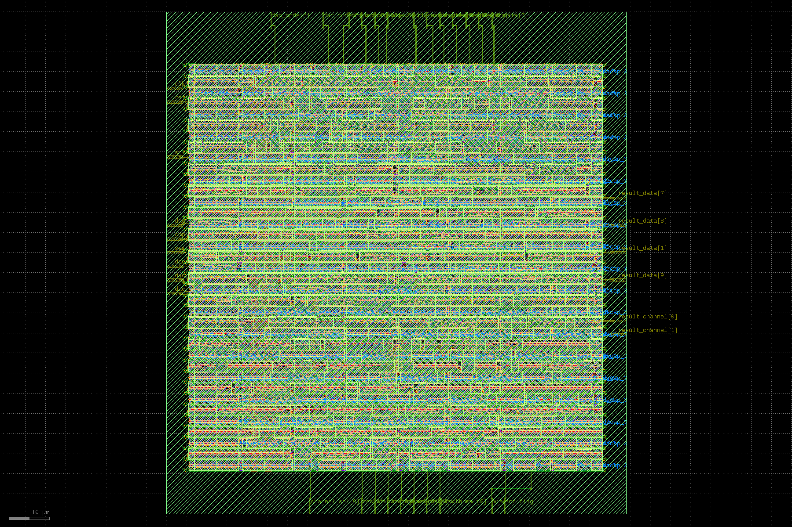

adc_top. Render produced with KLayout; open the downloaded GDS in KLayout or another GDSII viewer for layer inspection.results/layout/klayout_gds/adc_top.klayout.gds
Physical layout rendered from the KLayout GDS stream.

adc_top. Render produced with KLayout; open the downloaded GDS in KLayout or another GDSII viewer for layer inspection.results/layout/klayout_gds/adc_top.klayout.gds